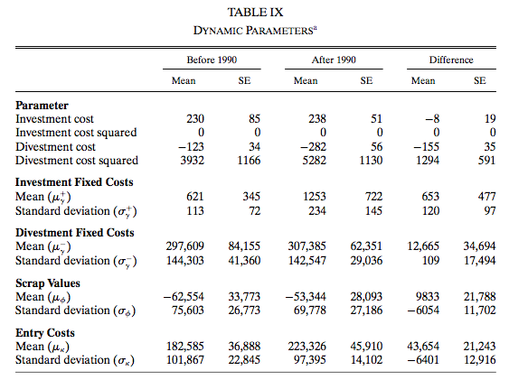
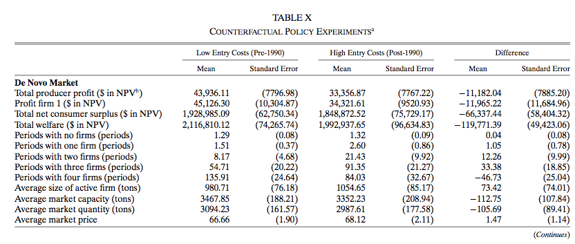

Chapter 8 Dynamic Game
8.1 Multiple-Agent Model
- There are multiple players in an industry.
- There is a strategic interaction across players.
8.1.1 Setting
- There is \(i = 1, \cdots, N\) players.
- Time is discrete \(t = 1, \cdots, \infty\).
- There are \(K + 1\) actions for each player \(A_i = \{0, 1, \cdots, K\}\).
- \(A = \prod_{i = 1}^N A_i\). \(m_a = (K + 1)^N\).
- There are \(L\) states for each player \(S_i = \{1, \cdots, L\}\).
- \(S = \prod_{i = 1}^N S_i\). \(m_s = L^N\).
8.1.2 Timing of the Model
- At period \(t\):
- State \(s_t = (s_{t1}, \cdots, s_{tN})' \in S\) is publicly observed.
- Choice-specific profitability shocks \(\epsilon_{ti} \in \mathbb{R}^{K + 1}\) are drawn from \(F(\cdot|s_{ti}, _{t,-i})\) i.i.d. and privately observed by player \(i\) for each \(i = 1, \cdots, N\).
- \(\epsilon_{ti}\) is independent across \(i\).
- Actions \(a_{ti} \in A_i, i = 1, \cdots, N\) are chosen simultaneously.
- The state evolves according to a transition probability: \[\begin{equation} g(a, s, s') := \mathbb{P}\{s_{t + 1} = s'|s_t = s, a_t = a\}, \end{equation}\]
\[\begin{equation} G := \begin{pmatrix} g(1, 1, 1) & \cdots & g(1, 1, m_s)\\ \vdots & & \vdots \\ g(m_a, 1, 1) & \cdots & g(m_a, 1, m_s)\\ &\vdots& \\ g(1, m_s, 1) & \cdots & g(1, m_s, m_s)\\ \vdots & & \vdots \\ g(m_a, m_s, 1) & \cdots & g(m_a, m_s, m_s)\\ \end{pmatrix}. \end{equation}\]
8.1.3 Period Profit
When the state is \(s_t\), action profile is \(a_t\), and the profitability shocks are \(\epsilon_t\), the period payoff of player \(i\) is: \[\begin{equation} \pi_i(a_t, s_t) + \sum_{k = 0}^K \epsilon_{tik}1\{a_{ti} = k\}, i = 1, \cdots, N, \end{equation}\] where \(\pi_i(a_t, s_t)\) is the mean period profit of player \(i\).
Let: \[ \epsilon_{ti a_{ti}} = \sum_{k = 0}^K \epsilon_{tik}1\{a_{ti} = k\} \] be the choice-specific profitability shock.
Let \(\Pi_i\) summarize the choice-specific mean period payoffs at each state: \[\begin{equation} \Pi_i := \begin{pmatrix} \pi_i(1, 1)\\ \vdots\\ \pi_i(m_a, 1)\\ \vdots\\ \pi_i(1, m_s)\\ \vdots\\ \pi_i(m_a, m_s) \end{pmatrix}. \end{equation}\]
The profit of player \(i\) is the discounted sum of future payoffs with discount factor \(\beta < 1\).
8.1.4 Belief
- Let \(\sigma_i(a|s)\) be the player \(i\)’s belief about the possibility of having action profile \(a\) when the realized state is \(s\), which may or may not coincide with the equilibrium probability.
- Let \(\sigma_i\) stack them up as: \[ \sigma_i(s) = \begin{pmatrix} \sigma_i(1|s)\\ \vdots\\ \sigma_i(m_a|s), \end{pmatrix} \] \[ \sigma_i = \begin{pmatrix} \sigma_i(1)\\ \vdots \\ \sigma_i(m_s)\\ \end{pmatrix}, \] and let \(\sigma\) be: \[ \sigma = \begin{pmatrix} \sigma_1 \\ \vdots\\ \sigma_N \end{pmatrix}. \]
8.1.5 Markov Perfect Equilibrium
- A collection \((a, \sigma) = (a_1, \cdots, a_N, \sigma_1, \cdots, \sigma_N)\) is a pure-strategy Markov perfect equilibrium if:
- All players use Markovian strategies;
- For all \(i\), \(a_i\) is a best response to \(a_{-i}\) given the belief \(\sigma_i\) at all state \(s \in S\);
- For all \(i\), the belief \(\sigma_i\) is consistent with the strategy \(a\).
8.1.6 Ex-ante Value Function
- When the belief of player \(i\) about the future behavior is \(\sigma_i\), then the ex-ante value function associated with this belief is:
\[\begin{equation} \begin{split} V_i(\sigma_i, s) &= \sum_{a \in A} \sigma_i(a|s)[\pi_i(a, s) + \beta \sum_{s' \in S} g(a, s, s') V_i(\sigma_i, s')]\\ & + \sum_{k = 0}^K \mathbb{E}\{\epsilon_i^k|a_i = k, s\}\sigma_i(a_i = k|s). \end{split} \end{equation}\]
- By stacking up over the state, we obtain a matrix representation: \[\begin{equation} V_i(\sigma_i) = \Sigma_i(\sigma_i) \Pi_i + \Sigma_i(\sigma_i) E_i(\sigma_i) + \beta \Sigma_i(\sigma_i) G V_i(\sigma_i). \end{equation}\] where \[\begin{equation} \Sigma_i(\sigma_i) = \begin{pmatrix} \sigma_i(1)' & & \\ & \ddots & \\ & & \sigma_i(m_s)' \end{pmatrix}, \end{equation}\] and \[\begin{equation} D_i(\sigma_i) = \begin{pmatrix} \sum_{k = 0}^K \mathbb{E}\{\epsilon_i^k|a_i = k, 1\}\sigma_i(a_i = k|1)\\ \vdots\\ \sum_{k = 0}^K \mathbb{E}\{\epsilon_i^k|a_i = k, m_s\}\sigma_i(a_i = k|m_s) \end{pmatrix}. \end{equation}\]
- If \(I - \beta \Sigma_i(\sigma_i)G\) is invertible, we have: \[ V_i(\sigma_i) = [I - \beta \Sigma_i(\sigma_i)G]^{-1}[\Sigma_i(\sigma_i)\Pi_i + D_i(\sigma_i)]. \]
8.1.7 Choice-specific Value Function
- When the state is \(s\) and the belief of player \(i\) is \(\sigma_i\), then the mean value of choosing action \(a_i\) is:
\[\begin{equation} \begin{split} v_i(\sigma_i, a_i, s) &= \sum_{a_{-i} \in A_{-i}} \sigma_i(a_{-i}|s)[ \pi_i(a_i, a_{-i}, s) \\ &+ \beta \sum_{s' \in S} g(a_i, a_{-i}, s, s') V_i(\sigma_i, s')]. \end{split} \end{equation}\] - This is the choice-specific mean value function given belief \(\sigma_i\).
8.1.8 Optimality Condition
- When the state is \(s\) and profitability shock is \(\epsilon_i\), \(a_i\) is optimal for player \(i\) under belief \(\sigma_i\) if and only if: \[\begin{equation} v_i(\sigma_i, a_i, s) + \epsilon_{i, a_i} \ge v_i(\sigma_i, a_i', s) + \epsilon_{i, a_i'}, \forall a_i' \in A_i. \end{equation}\]
- This condition is similar to the optimality condition in single-agent dynamic models.
- Only difference is that the belief is now about the others’ actions in addition to about own future behaviors.
8.1.9 Optimal Conditional Choice Probability
- Therefore, the optimal conditional choice probability of player \(i\) with belief \(\sigma_i\) is:
\[\begin{equation} \begin{split} p(a_i|s) &= \mathbb{P}\{v_i(\sigma_i, a_i, s) + \epsilon_{i, a_i} \ge v_i(\sigma_i, a_i', s) + \epsilon_{i, a_i'}, \forall a_i' \in A_i\}\\ &=\int \prod_{a_i' \neq a_i}1\{v_i(\sigma_i, a_i, s) + \epsilon_{i, a_i} \ge v_i(\sigma_i, a_i', s) + \epsilon_{i, a_i'}\} d F\\ &:= \Psi(\sigma_i, a_i, s). \end{split} \end{equation}\]
8.1.10 Equilibrium Condition
- Let: \[ p(a|s) = \prod_{i = 1}^N p(a_i|s). \] and \[ \Psi(\sigma, a, s) = \prod_{i = 1}^N \Psi(\sigma_i, a_i, s). \]
- Stacking them up as: \[ p(s) = \begin{pmatrix} p(1|s) \\ \vdots \\ p(m_a|s) \end{pmatrix}, \] \[ p = \begin{pmatrix} p(1)\\ \vdots\\ p(m_s) \end{pmatrix}, \]
\[ \Psi(\sigma, s) = \begin{pmatrix} \Psi(\sigma, 1, s) \\ \vdots \\ \Psi(\sigma, m_a, s) \\ \end{pmatrix}, \] \[ \Psi(\sigma) = \begin{pmatrix} \Psi(\sigma, 1) \vdots\\ \Psi(\sigma, m_s) \end{pmatrix}. \]
- Pesendorfer & Schmidt-Dengler (2008) prove the following statement: \[\begin{equation} p = \Psi(p). \end{equation}\]
- In any Markov perfect equilibrium, the optimal conditional choice probability vector \(p\) satisfies the above equality.
- Conversely, any \(p\) that satisfies the equilibrium condition above can be derived as the optimal conditional choice probability of a Markov perfect equilibrium strategy profile.
8.1.11 Equilibrium Condition
- Pesendorfer & Schmidt-Dengler (2008) also show the following statements.
- By Brouwer’s fixed-point theorem, a Markov perfect equilibrium exists.
- But Markov perfect equillibria need not be unique.
- Therefore, we may not be able to derive the likelihood.
- If the payoff function and transition probability is symmetric across players, then symmetric Markov perfect equilibrium exists.
- This significantly reduces the dimensionality of the problem.
8.1.12 Single Path of Play
- The estimation of dynamic games is mostly based on time series data of an industry.
- We often assume that the data is generated from a single path of play.
- Under Markov perfect equilibrium assumption, this means that players make same choices over time at the same state \((s, \epsilon_i)\).
- This assumption rules out equilibrium switches over time.
- If we use cross-sectional data, we have to keep this point in our mind, because then we observe data generated from multiple paths across markets.
- The assumption that the same equilibrium is played across markets may need further justification.
8.1.13 Identification
- The parameters of the model is \((\Pi_1, \cdots, \Pi_N, F, \beta, G)\).
- \(G\) is directly identified from data
- \(\beta\) and \(F\) are fixed.
- \((\Pi_1, \cdots, \Pi_N)\) contains \(m_a \times m_s \times N\) unknown parameters.
- On the other hand, the equilibrium condition only has \(K \times m_s \times N\) restrictions.
- This time, the normalization \(\pi_i(0, a_{-i}|s) = 0\) is not sufficient.
- It is often assumed that the payoff of a player \(i\) is not directly influence by the state of other players: \[\begin{equation} \pi_i(a, s_i, s_{-i}) = \pi_i(a, s_i, s_{-i}'), \forall a \in A, s_i \in S_i, s_{-i}, s_{-i}' \in S_{-i}. \end{equation}\]
- Under these restrictions, the number of unknown parameters is \(K (K + 1)^{N - 1} \times L \times N\).
- So, if \(L \ge K + 1\), i.e., the number of states is larger than the number of actions, at least the order condition is satisfied.
8.1.14 Estimation: CCP Approach
- Because dynamic games often have multiple equillibria, nested-fixed point algorithm fails to pin down the likelihood of data.
- Instead we use CCP approach exploiting the equilibrium condition: \[\begin{equation} p = \Psi^\theta(p) = \Psi^{(\theta_1, \theta_2)}(p), \end{equation}\] where \(\theta_1\) is the parameters in the mean profit function, and \(\theta_2\) is the parameters in the transition law.
- In the first step, we estimate \(\theta_2\) and \(p\) directly from the data. Let \(\hat{\theta}_2\) and \(\hat{p}\) be the estimates.
- Then, we can estimate \(\theta_1\) by solving: \[\begin{equation} \min_{\theta_1} [\hat{p} - \Psi^{(\theta_1, \hat{\theta}_2)}(\hat{p})]' W [\hat{p} - \Psi^{(\theta_1, \hat{\theta}_2)}(\hat{p})], \end{equation}\] where \(W\) is some weighting matrix.
8.1.15 Computing \(\Psi\)
Mapping from conditional choice probabilities to ex-ante value function: \[ V_i(\hat{p}) = [I - \beta \Sigma_i(\hat{p})G]^{-1} [\Sigma_i(\hat{p})\Pi_i + D_i(\hat{p})]. \]
Mapping from ex-ante value function to conditional choice probability: \[\begin{equation} p_i(a_i|s) = \mathbb{P}\{v_i(\tilde{p}, a_i, s) + \epsilon_{ia_i} \ge v_i(\tilde{p}, a_i', s) + \epsilon_{ia_i'}, \forall a_i' \in A_i\}, \end{equation}\] where \[\begin{equation} v_i(\tilde{p}, a_i, s) = \sum_{a_{-i} \in A_{-i}} \tilde{p}(a_{-i}|s) [\pi_i(a_i, a_{-i}, s) + \beta \sum_{s' \in S} g(a_i, a_{-i}, s, s') V_i(\hat{p}, s')]. \end{equation}\]
If \(\epsilon_{ia}\) follows an i.i.d. type-I extreme value distribution, both \(D_i(\hat{p})\) and the second equation have closed-forms.
8.2 With Continuous Dynamic Choice
8.2.1 Continuous Control
- So far we have assumed that players’ actions are discrete.
- However, continuous controls such as investment prevails in the real world.
- One way to address this issues is to discretize the data and model everything in a discrete way.
- How to model continuous controls without discretization?
- This argument applies to the single-agent models as well.
- Let \(a_{ti} = (a_{tid}, a_{tic}) \in A_i = A_{id} \times A_{ic}\) be a generic action of player \(i\) in period \(t\), where \(A_{id} = \{0, 1, \cdots, K\}\) and \(A_{ic} \subset \mathbb{R}\).
- Let \(s_{ti} \in S_i\) be a generic state of player \(i\) in period \(t\), where \(S_i \subset \mathbb{R}^L\).
- Let \(\epsilon_{ti} \in \mathbb{R}^M\) be profitability shocks for player \(i\) in period \(t\), which are independent across players.
8.2.2 Period Payoff
- Let \(\pi_i(a, s, \epsilon_{ti})\) be the period payoff of player \(i\) in period \(t\) including the profitability shocks when the action profile is \(a\), the state is \(s\), and the profitability shocks are \(\epsilon_{ti}\).
- In the discrete choice framework, we assumed additive separability: \[\begin{equation} \pi_i(a, s, \epsilon_{ti}) = \pi_i(a, s) + \sum_{k = 0}^K \epsilon_{tik}1\{a_{ti} = k\}. \end{equation}\]
- For continuous control, we may want to impose a restriction that ensures the monotonicity of the policy function in the profitability shocks, for example: \[\begin{equation} \pi_i(a, s, \epsilon_{ti}) = \pi_i(a, s) + \sum_{k = 0}^K \epsilon_{tik} 1\{a_{tid} = k\} + \epsilon_{tic} a_{tic}. \end{equation}\]
8.2.3 Policy Function Estimation with Continuous Control
- Let \(a_{ic}(s, \epsilon_{i}) = a_{ic}(s, \epsilon_{ic})\) be the policy function of firm \(i\) and suppose that it is increasing in \(\epsilon_{ic}\).
- Moreover, assume that we know the distribution of \(\epsilon_{ic}\), say, \(F_{\epsilon_c}(\cdot|s)\).
- We can identify the distribution of continuous control \(a_{ic}\) conditional on \(s\) directly from the data. Let \(F_{a_{ic}}(a_{ic}|s)\) be the identified distribution function of \(a_{ic}\) conditional on \(s\).
- Then, we can identify the policy function for the continuous control: \[\begin{equation} \begin{split} F_{a_{ic}}(a|s) &= \mathbb{P}\{a_{ic} \le a|s\}\\ &= \mathbb{P}\{a_{ic}(s, \epsilon_{ic}) \le a\}\\ &=\mathbb{P}\{\epsilon_{ic} \le a_{ic}^{-1}(s, a)\}\\ &=F_c[a_{ic}^{-1}(s, a)|s]\\ &\Leftrightarrow a = F_{a_{ic}}^{-1}\{F_c[a_{ic}^{-1}(s, a)|s]|s\}, \end{split} \end{equation}\]
- Inserting \(a = a_{ic}(s, \epsilon_{ic})\) to obtain: \[\begin{equation} \begin{split} a_{ic}(s, \epsilon_{ic}) &= F_{a_{ic}}^{-1}\{F_c[\underbrace{a_{ic}^{-1}(s, a_{ic}(s, \epsilon_{ic}))}_{\epsilon_{ic}}|s]|s\}\\ & = F_{a_{ic}}^{-1}[F_c^{-1}(\epsilon_{ic}|s)|s]. \end{split} \end{equation}\]
8.2.4 Converting to the Standard Discrete Choice Model
- Inserting the identified policy for the continuous controls, we have:
\[\begin{equation} \begin{split} &\pi_i[a_{id}, a_{ic}(s, \epsilon_{ic}), a_{-i}, s, \epsilon_{d}] \\ &= \pi_i[a_{id}, a_{ic}(s, \epsilon_{ic}), a_{-i}, s] +\sum_{k = 0}^K \epsilon_{ik}1\{a_{id} = k\} + \epsilon_{ic} a_{ic}(s, \epsilon_{ic}) \end{split} \end{equation}\] - Then, we can consider a choice-specific mean value function w.r.t. the discrete control \(a_{id}\) by integrating out \(\epsilon_{ic}^t\) and others strategies and future behaviors. - Therefore, we can identify the optimal conditional choice probability in a reduced-form and from which we can identify the policy function for the discrete choice as well. - Then, we can apply the CCP approach to estimate the structural parameters.
8.2.5 Value Function Based CCP Approach
- Bajari, Benkard, & Levin (2007) proposes an alternative estimation method.
- The key is to characterize the equilibrium as follows.
- Let \(V_i^{(a_i, a_{-i})}(s)\) be the ex-ante value function associated with strategy profile \((a_i, a_{-i})\).
- The observed \((a_i^*, a_{-i}^*)\) is an equilibrium if: \[\begin{equation} V_i^{(a_i^*, a_{-i}^*)}(s) \ge V_i^{(a_i', a_{-i}^*)}(s), \forall a_i' \in A_i, \end{equation}\] for all \(s \in S, i = 1, \cdots, N\).
- Then, we can consider an objective function such that: \[\begin{equation} Q(\theta) = \sum_{s = 1}^{m_s} \sum_{i = 1}^N \sum_{a_i'} \min\{V_i^{(a_i^*, a_{-i}^*)}(s) - V_i^{(a_i', a_{-i}^*)}(s), 0\}^2, \end{equation}\] which penalizes the parameter violating the inequality condition of the equilibrium.
- There is a discretion about the choice of alternative strategies to construct the objective function.
- Thus, the summation over continuous control does not cover the entire range.
8.2.6 Approximating the Ex-ante Value Function
- Once we obtain the equilibrium policy functions, then in principle, we can compute the associated ex-ante value function, \(V_i^{(a_i, a_{-i})}\), in the equilibrium.
- We often use a numerical method to compute the ex-ante value function when continuous controls are relevant.
- Draw forward profitability shocks \(\epsilon_{ti}^{(r)}\) for \(t = \cdots, \tau\) for \(r = 1, \cdots, R\).
- At each period, sample \(a_{tid}^{(r)}\) from the estimated conditional choice probability.
- Also, compute \(a_{tic}^{(r)} = a_{tic}(s_t^{(r)}, \epsilon_{tic}^{(r)})\) using the estimated policy function for the continuous control and let \(a_{ti}^{(r)} = (a_{tid}^{(r)}, a_{tic}^{(r)})\).
- Draw next period states \(s_{t + 1}^{(r)}\) from \(g(a_{t}^{(r)}, s_t^{(r)}, s')\).
- Continue this until \(t = \tau\).
- Compute: \[\begin{equation} V_i^{(a_i^*, a_{-i}^*), R\tau}(s) = \frac{1}{R}\sum_{r = 1}^R \sum_{t = 1}^\tau \beta^t \pi_i[a^{(r)}, s^{(r)}, \epsilon_i^{(r)}] \end{equation}\] to approximate \(V_i^{(a_i^*, a_{-i}^*)}(s)\).
- It is a \(\tau\)-period forward simulation of the ex-ante value functions.
- For arbitrary \(a_i^{\prime}\), we can approximate \(V_i^{(a_i^{\prime}, a_{-i}^*)}(s)\) by following the same steps using the perturbed policy \(a_i^{\prime}\).
8.3 Dynamic Oligopoly Model
- In the application of the dynamic game estimation to the dynamic oligopoly model, we often jointly consider entry and exit decisions and investment decisions of firms.
- The entry and exit decisions are the discrete decisions and the investment decision is the continuous controls.
- The formal models and their characterization are found in Ericson & Pakes (1995) and Doraszelski & Satterthwaite (2010).
- Igami et al. (2018)’, the paper referred to in the introduction, falls into this category.
8.3.1 Ryan (2012)
- Ryan (2012) is one of the earliest applications.
- In 1990, the U.S. congress passed Amendments to the Clean Air act, adding new categories of regulated \(SO_2\) and \(NO_x\) emissions and requiring plants to undergo an environmental certification process.
- How costly is this regulation to the economy?
- The cost analysis is typically an engineering estimates of the expenditures on control and monitoring equipment necessary to bring a plant into compliance with the new regulation.
- However, the regulation changes both the sunk cost of entry as well as the investment cost. If the sunk cost is higher, the less firm will be active in the market, which reinforces the market power of active firms.
- This affects the equilibrium market structure.
- The engineering based cost analysis misses this important welfare loss from the changes in the market structure.
- This paper quantifies the welfare cost based on an empirical dynamic oligopoly model.
8.3.2 Setting
- There are several regional cement markets in the U.S.
- Each market is described by \(\overline{N} \times 1\) state vector \(s_t\), where \(s_{it}\) is the capacity of the \(i\)th firm at time \(t\), and \(\overline{N}\) is an exogenously imposed maximal number of active firms.
- \(s_{it} = 0\) means the firm is inactive.
8.3.3 Timing of the Game
- Incumbent firms (\(s_{it} > 0\)) receives a private draw from the distribution of scrap values.
- Incumbent firms decide whether to exit.
- Potential entrants receive a private draw of both investment and entry costs, while incumbent firms receive a private draw of both investment and disinvestment costs.
- All firms simultaneously make entry and investment decisions.
- Incumbent firms compete in the product market.
- Firms entry, exit, and investment are realized.
- The economy moves to the next period.
8.3.4 Demand Function
- In each market \(m\), firms face a constant elasticity of demand curves: \[\begin{equation} \ln Q_m(\alpha) = \alpha_{0m} + \alpha_1 \ln P_m, \end{equation}\] where \(Q_m\) is the aggregate market quantity, \(P_m\) is price, \(\alpha_{0m}\) is market-specific intercept, and \(\alpha_1\) is the elasticity of demand.
8.3.5 Production Cost Function
- The cost of output, \(q_i\), is given by: \[\begin{equation} C_i(q_i; \delta) = \delta_0 + \delta_1 q_1 + \delta_2 1\{q_i > \epsilon s_i\}(q_i - \epsilon s_i)^2, \end{equation}\] where \(q_i\) is the output of firm \(i\), \(\delta_0\) is the fixed cost of production, \(\delta_1\) is the linear variable cost, and the last term is a quadratic cost that matters only when the output is sufficiently close to the capacity.
8.3.6 Investment Cost
- The cost of investment and disinvestment is:
\[\begin{equation} \begin{split} \Gamma(x_i; \gamma) &= 1\{x_i > 0\}(\gamma_{i1} + \gamma_2 x_i + \gamma_3 x_i^2)\\ & + 1\{x_i < 0\}(\gamma_{i4} + \gamma_{5} x_i + \gamma_6 x_i^2), \end{split} \end{equation}\] where \(x_i\) is the investment of firm \(i\), and fixed investment and disinvestment costs \(\gamma_{i1}\) and \(\gamma_{i4}\) are drawn from distributions \(F_{\gamma}\) and \(G_{\gamma}\). - Let \(\mu_\gamma^+\) and \(\sigma_\gamma^+\) be the mean and standard deviation of \(F_\gamma\) and \(\mu_\gamma^-\) and \(\sigma_\gamma^-\) be the mean and standard deviation of \(G_\gamma\).
8.3.7 Entry and Exit Costs
- If the firm is a new entrant, it draws entry cost \(-\kappa_i\) from \(F_\kappa\).
- IF the firm is an incumbent, it draws scrap values \(\phi_i\) from \(F_\phi\).
- Then entry and exit cost is:
\[\begin{equation} \Phi_i(a_i, \kappa_i, \phi_i) = \begin{cases} - \kappa_i &\text{ if the firm enters}\\ \phi_i &\text{ if the firm exits}. \end{cases} \end{equation}\]
8.3.8 Period Profit Function
- As a consequence, the period profit function of firm \(i\) is: \[\begin{equation} \pi_i(s, a; \alpha, \delta, \gamma_i, \kappa_i, \phi_i) = \tilde{\pi}_i(s; \alpha, \delta) - \Gamma(x_i; \gamma_i) + \Phi_i(a_i; \kappa_i, \phi_i). \end{equation}\]
- Let \(\theta\) summarize the parameter regarding the period profit.
8.3.9 Transition
- The transition is deterministic.
- The investment changes the capacity \(s_i\).
- As a firm exits, the capacity moves to 0.
- As a firm enters, the capacity moves to the initial investment level.
8.3.10 Equilibrium
- Let \(\epsilon_i\) represent the firm’s private information about the cost of entry, exit, investment, and disinvestment.
- Each firm’s Markovian strategy \(\sigma_i(s, \epsilon_i)\) is a mapping from states and shocks to actions.
8.3.11 Value Function for Incumbents
- The value function for a firm with \(s_i > 0\) at the time of the exit decision under strategy profile \(\sigma\) is:
\[\begin{equation} \begin{split} &V_i(s; \sigma(s), \theta, \epsilon_i)\\ &=\tilde{\pi}_i(s; \theta) + \max\Bigg\{\phi_i,\\ & \mathbb{E}_{\epsilon_i}\max_{x_i^* \ge 0} \Bigg[ - \gamma_{i1} - \gamma_{2} x_i^* - \gamma_3 x_i^{*2} + \beta \int \mathbb{E}_{\epsilon_i} V_i(s'; \sigma(s'), \theta, \epsilon_i) dP(s_i + x^*, s'_{-i}; s, \sigma(s))\Bigg],\\ &\max_{x_i^* < 0} \Bigg[- \gamma_{i4} - \gamma_5 x_i^* - \gamma_6 x_i^{*2} + \beta \int \mathbb{E}_{\epsilon_i} V_i(s'; \sigma(s'), \theta, \epsilon_i) dP(s_i + x^*, s'_{-i}; s, \sigma(s)) \Bigg]\Bigg\}, \end{split} \end{equation}\] where each term in the blanket represents the value of exit, staying and making investment, and staying and making disinvestment. - At this timing the incumbent only observes \(\phi_i\), although it is a bit confusing because the value function is written as a function of \(\epsilon_i\).
8.3.12 Value Function for Entrants
- The value function for a firm with \(s_i = 0\) at the time of entry decision under strategy profile \(\sigma\) at the time of entry and investment decisions are:
\[\begin{equation} \begin{split} &V_i(s; \sigma(s), \theta, \epsilon_i)\\ &=\max\Bigg\{0, \\ &\max_{x_i^* > 0} \Bigg[ - \gamma_{1i} - \gamma_2 x_i^* - \gamma_3 x_i^2 + \beta \int \mathbb{E}_{\epsilon_i} V_i(s'; \sigma(s'), \theta, \epsilon_i) dP(s_i + x_i^*, s'_{-i}; s, \sigma(s))\Bigg] - \kappa_i\Bigg\}. \end{split} \end{equation}\]
8.3.13 Markov Perfect Equilibrium
- The strategy profile \(\sigma^*\) is a Markov perfect equilibrium if: \[\begin{equation} V_i(s; \sigma_i^*(s), \sigma_{-i}^*(s), \theta, \epsilon_i) \ge V_i(s; \sigma_i'(s), \sigma_{-i}^*(s), \theta, \epsilon_i), \forall \sigma_i', \end{equation}\] for all \(s, \epsilon_i\), and \(i\).
- To apply the CCP approach, we first have to assume that the same equilibrium is played across markets.
- This assumption is not innocuous as we saw in the previous section.
- It is also important to notice that we have to fix the expectation about the regulation regime by firms.
- We assume that firms assume that the regulatory environment is permanent.
8.3.14 Demand and Production Cost Estimation
- To estimate the demand function, Ryan uses supply-side cost shifters as the instrumental variables: coal prices, gas prices, electricity rates, and wage rates.
- Given the demand function, Ryan estimate the cost function from the FOC for the quantity competition.
- You should already know how to do this.
8.3.15 Investment Policy Function Estimation
- With fixed costs of investment and disinvestment, investment policy function follows a so-called \((s, S)\) rule, in which firms investment only when the current capacity is below a certain lower bound and makes disinvestment only when the current capacity is above a certain upper bound.
- The lower and upper bounds, and the adjustment level are chosen optimal as a function of the state.
8.3.16 Investment Policy Function Estimation
- Let \(s_{it}^*\) be the target level of capacity, which is parameterize as: \[\begin{equation} \ln s_{it}^* = \lambda_1' bs(s_{it}) + \lambda_2' bs \Bigg(\sum_{j \neq i} s_{jt}\Bigg) + u_{it}^*, \end{equation}\] where \(bs(\cdot)\) is finite-dimensional piece-wise cubic b-splines.
- The upper and lower bounds are parameterized as:
\[\begin{equation} \begin{split} &\overline{s}_{it} = s_{it}^* + \exp\Bigg(\lambda_3' bs_1(s_{it}) + \lambda_4' bs_2\Bigg(\sum_{j \neq i} s_{jt} \Bigg) + \overline{u}_{it}^b \Bigg),\\ &\underline{s}_{it} = s_{it}^* - \exp\Bigg(\lambda_3' bs_1(s_{it}) + \lambda_4' bs_2\Bigg(\sum_{j \neq i} s_{jt} \Bigg) + \underline{u}_{it}^b \Bigg). \end{split} \end{equation}\]
8.3.17 Entry and Exit Policy Functions
- The probability of entry is parameterized as: \[\begin{equation} \mathbb{P}\{\chi_i = 1; s_i = 0, s\} = \Phi\Bigg(\psi_1 + \psi_2\Bigg(\sum_{j \neq i}\Bigg) + \psi_3 1(t > 1990) \Bigg), \end{equation}\] and the probability of exit is parameterized as: \[\begin{equation} \mathbb{P}\{\chi_i = 0; s_i > 0, s\} = \Phi\Bigg(\psi_4 + \psi_5 s_{it} + \psi_6 \Bigg(\sum_{j \neq i}\Bigg) + \psi_7 1(t > 1990) \Bigg), \end{equation}\] where \(\Psi\) is the cumulative distribution function of the standard normal random variable.
8.3.18 BBL Estimation
- Now by comparing the value function under the identified policies with value functions under alternative policies, one can estimate the structural parameters.
- Alternative policies can be obtained by perturbing the upper and lower bounds and the target level of investment and the thresholds for entry and exit around the equilibrium policies.
- How much to perturb is a practical issue.
- Then, Ryan finds structural parameters that minimizes the BBL objective function.
8.3.19 Structural Parameters Estimation Results

8.3.20 Counterfactual Simulation
- To asses the welfare cost of the amendment, Ryan solves the model under two sets of parameters: the actual parameters and the parameters before the regulation.
- In the simulation, we can set whatever initial state.
- Ryan consider two types of initial state:
- No incumbent firms and 4 potential entrants.
- Two incumbent firms and two potential entrants.
8.3.21 Counterfactual Simulation Results

8.3.22 Counterfactual Simulation Estimation Results

8.4 Dynamic Oligopoly with Many Firms
- Solving a dynamic game becomes quickly intractable when the number of firms increases and hence the dimension of the state profile increases.
- Weintraub, Benkard, & Roy (2008) propose a new equilibrium concept called oblivious equilibrium that approximates a Markov perfect equilibrium when there are many firms and do not suffer from the aforementioned computational problem.
8.4.1 Setting
- The setting is effectively the same as Ericson & Pakes (1995) and Doraszelski & Satterthwaite (2010).
- The time is discrete and infinite \(t \in \mathbb{N}\).
- The information set at time \(t\) is \(\mathcal{F}_t\).
- Each firm that enters the industry is assigned a positive integer value index \(x_{it} \in \mathbb{N}\).
- It can be regarded as a quality index, but can be whatever.
- Let \(S_t\) be the set of indices of incumbent firms at time \(t\).
- Let \(n_t\) be the number of incumbent firms at time \(t\).
- The industry state \(s_t\) is a vector of counts over possible values of \(x_{it}\) among \(i \in S_t\).
- The state space is \(\overline{\mathcal{S}} := \{s \in N^{\infty}: \sum_{x = 0}^\infty s(x) < \infty\}\).
- For expositional reason, consider an extended state space too \(\mathcal{S} := \{s \in \mathbb{R}_+^{\infty}: \sum_{x = 0}^\infty s(x) < \infty\}\)
- For each \(i \in S_{t}\), define the state of the competitors by \(s_{-i, t}(x) := s_t(x) - 1\{x_{it} = x\}\).
- The expected period profit of firm \(i\) is \(\pi(x_{it}, s_{-i, t})\).
- In each period, each incumbent draws a positive real-valued sell-off value \(\phi_{it}\), and exits from the market if the sell-off value exceeds the continuation value.
- If an incumbent firm stays in the market, the firm chooses an investment \(\iota_{it} \in \mathbb{R}_+\).
- Then, the state of the firm is updated according to a rule: \[ x_{i, t + 1} = \max\{0, x_{it} + w(\iota_{it}, \zeta_{i, t + 1})\}, \]
- where \(w\) captures the impact of investment and \(\zeta_{i, t + 1}\) is a shock to the investment process.
- The unit cost of investment is \(d\).
- In each period, new firms can enter the industry by paying a setup cost \(\kappa\).
- Entrants do not earn profits in the period that they enter.
- They appear in the following period at state \(x^e \in \mathbb{N}\).
8.4.2 Timing of the Game
- Each incumbent firm observes its sell-off value, and then makes exit and investment decisions.
- The number of entering firms is determined and each entrant pays an entry cost \(\kappa\).
- Incumbent firms compete in the spot market and receive profits.
- Exiting firms exit and receive their sell-off values.
- Investment outcomes are determined, new entrants enter, and the industry takes on a new state \(s_{t + 1}\).
8.4.3 Assumptions
- An industry state \(s \in \mathcal{S}\) is said to dominate \(s' \in \mathcal{S}\) if for all \(x \in \mathbb{N}\) \(\sum_{z \ge x} s(z) \ge \sum_{z \ge x} s'(z)\), and the relation is denoted by \(s \succeq s'\).
- Assumptions on \(\pi\):
- For all \(s \in \mathcal{S}\), \(\pi(x, s)\) is increasing in \(x\).
- For all \(x \in \mathbb{N}\) and \(s, s' \in \mathcal{S}\), if \(s \succeq s'\), then \(\pi(x, s) \le \pi(x, s')\).
- For all \(x \in \mathbb{N}\) and \(s \in \mathcal{S}\), \(\pi(x, s) > 0\) and \(\sup_{x, z} \pi(x, s) < \infty\).
- For all \(x \in \mathbb{N}\), the function \(\ln \pi(x, \cdot): \mathcal{S} \to \mathbb{R}_+\) is “smooth” enough (for the rigorous assumption, refer to the paper).
- Assumptions on \(w\) and shocks:
- The random variables \(\{\phi_{it}| t \ge 0, i \ge 1\}\) are i.i.d. and have finite expectations and well-defined density functions with support \(\mathbb{R}_+\).
- The random variables \(\{\zeta_{it}| t \ge 0, i \ge 1\}\) are i.i.d. and independent of \(\{\phi_{it}| t \ge 0, i \ge 1\}\).
- For all \(\zeta\), \(w(\iota, \zeta)\) is non-decreasing in \(\iota\).
- For all \(\iota > 0\), \(\mathbb{P}\{w(\iota, \zeta_{i, t + 1} > 0\} > 0\).
- There exists a positive constant \(\overline{w} \in \mathbb{N}\) such that \(|w(\iota, \zeta)| \le \overline{w}\) for all \((\iota, \zeta)\).
- There exist a positive constant \(\overline{\iota}\) such that \(\iota_{it} < \overline{\iota}\), \(\forall i, t\).
- For all \(k \in \{- \overline{w}, \cdots, \overline{w}\}\), \(\mathbb{P}\{w(\iota, \zeta_{i, t + 1} = k\}\) is continuous in \(\iota\).
- The transitions generated by \(w(\iota, \zeta)\) are unique investment choice admissible.
- The notion of unique investment choice admissibility is introduced by @Doraszelski & Satterthwaite (2010) and means that under the investment function firms’ investment decision problem has a unique solution.
- Without this assumption, the existence of pure-strategy equilibrium is not guaranteed and the computation can become complicated.
- Assumptions on potential entrants:
- When there are a large number of potential entrants who play a symmetric mixed entry strategy, the equilibrium number of entrants is well-approximated by a Poisson distribution.
- We assume this for simplicity.
- The number of firms entering during period \(t\) is a Poisson random variable that is independent of \(\{\phi_{it}| t \ge 0, i \ge 1\}\) conditional on \(s_t\).
- \(\kappa > \beta \overline{\phi}\), where \(\overline{\phi}\) is the expected net present value of entering the market, investing zero and earning zero profits each period, and then exiting at an optimal stopping time.
- Let \(\lambda(s_t)\) be the expected number of firms entering at industry state, which is endogenously determined.
8.4.4 Strategy Profile
- Investment strategy \(\iota: \mathbb{N} \times \mathcal{S} \to \mathbb{R}_+\) : \(\iota_{it} = \iota(x_{it}, s_{-it})\).
- Exit strategy \(\rho: \mathbb{N} \times \mathcal{S} \to \mathbb{R}_+\) : an incumbent exits if and only if \(\phi_{it} > \rho(x_{it}, s_{-it})\).
- Bundle them as \(\mu = (\iota, \rho) \in \mathcal{M}\).
- Entry rate \(\lambda: \mathcal{S} \to \mathbb{R}_+\), \(\lambda \in \Lambda\).
8.4.5 Value Function
- The expected net present value for a firm at state \(x\) when its competitors state is \(s\), given that its competitors each follows a common strategy \(\mu \in \mathcal{M}\), the entry rate function is \(\lambda \in \Lambda\), and the firm itself follows strategy \(\mu' \in \mathcal{M}\) is: \[ V(x, s|\mu', \mu, \lambda) := \mathbb{E}_{\mu', \mu, \lambda}\left\{\sum_{k = t}^{\tau_i} \beta^{k - t}[\pi(x_{ik}, s_{-ik}) - d \iota_{ik}] + \beta^{\tau_i - t} \phi_{i, \tau_i}|x_{it} = x, s_{-it} = s\right\}, \] where \(\tau_i\) is a random variable that represents the time at which firm \(i\) exits under the exit strategy.
- We also write as \(V(x, s|\mu, \lambda) := V(x, s|\mu, \mu, \lambda)\) when all firms follow the same strategy.
8.4.6 Markov-perfect Equilibrium
- A strategy profile \(\mu \in \mathcal{M}\) and an entry rate \(\lambda \in \Lambda\) is a Markov-perfect equilibrium if:
- The strategy profile satisfies: \[ \sup_{\mu' \in \mathcal{M}} V(x, s|\mu', \mu, \lambda) = V(x, s|\mu, \lambda), \forall x \in \mathbb{N}, \forall s \in \overline{\mathcal{S}}. \]
- The entry rate satisfies: \[ \sum_{s \in \overline{S}} \lambda(s) \{\beta \mathbb{E}_{\mu, \lambda}[V(x^e, s_{-i, t + 1}|\mu, \lambda)|s_t = s] - \kappa\} = 0, \] \[ \beta \mathbb{E}_{\mu, \lambda}[V(x^e, s_{-i, t + 1}|\mu, \lambda)|s_t = s] - \kappa \le 0, \forall s \in \mathcal{\overline{S}}, \] \[ \lambda(s) \ge 0,s \in \mathcal{\overline{S}}. \]
- That is, at each industry state, either the expected entry profit is zero or the entry rate is zero.
- The authors prove that there exists a symmetric equilibrium.
8.4.7 Oblivious Strategy
- The Markov-perfect equilibrium becomes quickly computationally intractable when the number of firms increases, because firms’ strategies depends on other firms’ states.
- We consider a firm who is oblivious of other firms’ exact states but only cares the long-run average industry state on top of its own state.
- Let \(\widetilde{\mathcal{M}} \subset \mathcal{M}\) and \(\widetilde{\Lambda} \subset \Lambda\) be the set of oblivious strategies and the set of oblivious entry rate functions in the sense that both \(\mu \in \widetilde{\mathcal{M}}\) and \(\lambda \in \widetilde{\Lambda}\) do not depend on \(s\).
8.4.8 Long-run Average Industry State
- Then, if all firms use a common strategy \(\mu \in \widetilde{\mathcal{M}} \subset \mathcal{M}\), each firm’s state evolves as an independent transient Markov chain.
- Let the \(k\)-period transition probability of this Markov chain be denoted by \(P_{\mu}^k(x, y)\).
- The expected time that a firm spends at state \(x\) is \(\sum_{k = 0}^\infty P_\mu^k(x^e, x)\).
- The expected lifespan of a firm is \(\sum_{k = 0}^\infty \sum_{x \in \mathbb{N}} P_\mu^k(x^e, x)\).
- Let \(\tilde{s}_t(x) := \mathbb{E}[s_t(x)]\) be the expected number of firms at state \(x\).
- Under the stated assumptions, if firms make decisions according to an oblivious strategy \(\mu \in \widetilde{M}\) and enter according to an oblivious entry rate function \(\lambda \in \widetilde{\Lambda}\), and the expected time that firm spends in the industry is finite, then: \[ \lim_{t \to \infty} \tilde{s}_t(x) = \lambda \sum_{k = 0}^\infty P_{\mu}^k(x^e, x), \] for all \(x \in \mathbb{N}\).
- We write the long-run average industry state as \(\tilde{s}_{\mu, \lambda}(x) := \lim_{t \to \infty} \tilde{s}_t(x)\).
8.4.9 Oblivious Value Function
For an oblivious strategy \(\mu', \mu \in \widetilde{\mathcal{M}}\) and an oblivious entry rate function \(\lambda \in \widetilde{\Lambda}\), we define an oblivious value function: \[ \widetilde{V}(x|\mu', \mu, \lambda) := \mathbb{E}_{\mu'} \left\{\sum_{k = t}^{\tau_i} \beta^{k - t}[\pi(x_{ik}, \tilde{s}_{\mu, \lambda}) - d \iota_{ik}] + \beta^{\tau_i - t} \phi_{i, \tau_i}| x_{it} = x \right\}. \]
The firm approximates the value function by evaluating at the long-run average industry state.
Note that it still depends on other firms’ strategy \(\mu\) because it determines the long-run average industry state.
We also write as \(\widetilde{V}(x|\mu, \lambda) := \widetilde{V}(x|\mu, \mu, \lambda)\).
8.4.10 Oblivious Equilibrium
- An oblivious strategy \(\mu', \mu \in \widetilde{\mathcal{M}}\) and an oblivious entry rate function \(\lambda \in \widetilde{\Lambda}\) is an oblivious equilibrium if:
- The oblivious strategy satisfies: \[ \sup_{\mu' \in \widetilde{\mathcal{M}}} \widetilde{V}(x|\mu', \mu, \lambda) = \widetilde{V}(x|\mu, \lambda), \forall x \in \mathbb{N}. \]
- The oblivious entry rate function satisfies: \[ \lambda [\beta \widetilde{V}(x^e|\mu, \lambda) - \kappa] = 0, \] \[ \beta \widetilde{V}(x^e|\mu, \lambda) - \kappa \le 0, \] \[ \lambda \ge 0. \]
- Computing the equilibrium is surprisingly easy because the dynamic programming involves only one-dimensional state variable \(x_{it}\).
- Given a strategy profile, first compute \(\tilde{s}_{\mu, \lambda}\).
- Given \(\tilde{s}_{\mu, \lambda}\), the dynamic programming is only of \(x_{it}\).
8.4.11 Asymptotic Results and Extensions
- The authors show that under a certain condition when the market size goes to infinity, an oblivious equilibrium approximates an Markov-perfect equilibrium in the sense that a deviation from the oblivious equilibrium to a (possibly non-oblivious) best response does not improve the value for a firm.
- Benkard, Jeziorski, & Weintraub (2015) consider an extension of the current model to the partially oblivious equlibrium in which a subset of firms follow a non-oblivious strategy and the other firms follow an oblivious strategy.
- Ifrach & Weintraub (2017) further extends the current model to the moment-based Markov equilibrium in which a firm’s strategy depends on some sets of moments regarding the industry state.
References
Bajari, P., Benkard, C. L., & Levin, J. (2007). Estimating Dynamic Models of Imperfect Competition. Econometrica, 75(5), 1331–1370.
Benkard, C. L., Jeziorski, P., & Weintraub, G. Y. (2015). Oblivious equilibrium for concentrated industries. The RAND Journal of Economics, 46(4), 671–708.
Doraszelski, U., & Satterthwaite, M. (2010). Computable Markov-perfect industry dynamics. The RAND Journal of Economics, 41(2), 215–243.
Ericson, R., & Pakes, A. (1995). Markov-Perfect Industry Dynamics: A Framework for Empirical Work. The Review of Economic Studies, 62(1), 53–82.
Ifrach, B., & Weintraub, G. Y. (2017). A Framework for Dynamic Oligopoly in Concentrated Industries. The Review of Economic Studies, 84, 1106–1150.
Igami, M., Sugaya, T., Thank, W., Harrington, J., Asker, J., Porter, R., … Kaplow, L. (2018). Measuring the Incentive to Collude: The Vitamin Cartels, 1990-1999.
Pesendorfer, M., & Schmidt-Dengler, P. (2008). Asymptotic Least Squares Estimators for Dynamic Games. Review of Economic Studies, 75(3), 901–928.
Ryan, S. P. (2012). The Cost of Environment Regulation in a Concentrated Industry. Econometrica, 80(3), 1019–1061.
Weintraub, G. Y., Benkard, C. L., & Roy, B. V. (2008). Markov Perfect Industry Dynamics With Many Firms. Econometrica, 76(6), 1375–1411.